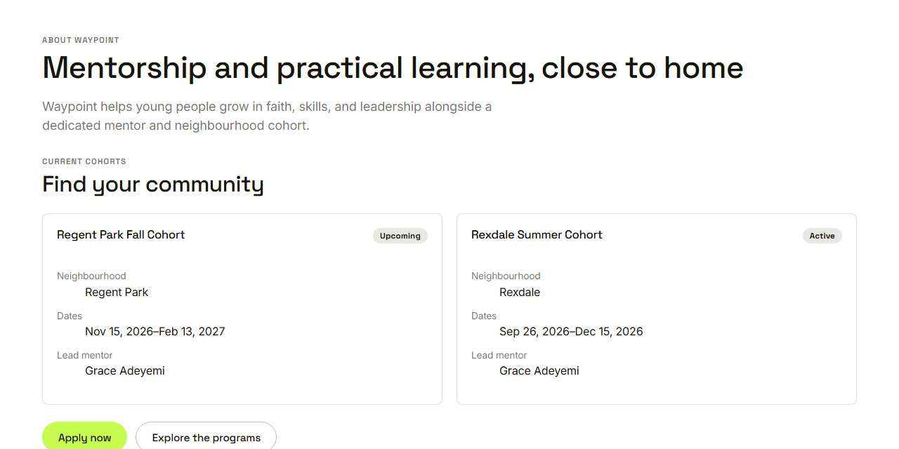
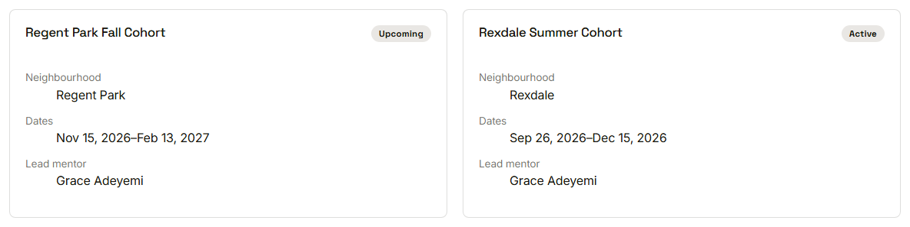
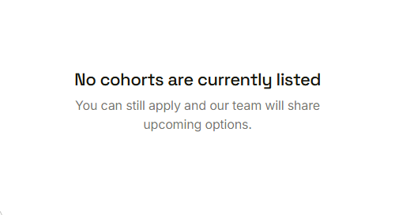

Waypoint · Video 013
Browsing current cohorts
Find a community before you apply
Find your community

The About page, open to everyone
One card for each cohort

Status, neighbourhood, dates, lead mentor
Nothing about the young people
No names of youth
No guardians
No member lists
One status for every public page
When nothing is listed

Visitors can still apply
Things to remember
The About page is open to everyone
Cards show status, neighbourhood, dates and lead mentor
Nothing about the young people appears
With no cohort listed, visitors can still apply